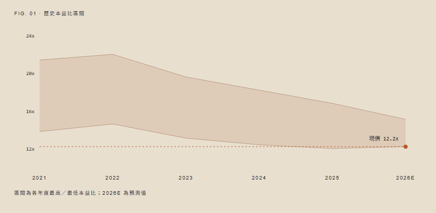

亞太微電子封測股份有限公司Apex Packaging Technologies Inc.
先進封裝產能全面滿載，2026E 營收與獲利翻倍成長
投資核心論點
INVESTMENT THESIS預估 2.5D/3D 先進封裝產能利用率於 2026E 達 94%，帶動整體營業收入年增 30.8% 至 NT$ 89,500M。主因高算力晶片對晶圓級基板封裝（CoWoS 類架構）需求爆發，公司自主研發之微凸塊（Micro-bump）接合良率上升至 92.5%，鞏固高階訂單市占率。
高毛利封裝業務佔比由 2024 年之 38% 提升至 2026E 之 57%，帶動整體毛利率擴張 5.7 個百分點至 57.2%。隨著自主研發的矽中介層（Silicon Interposer）於第三季完成驗證，單位材料成本預估降低 14.2%，獲利結構持續優化。
自由現金流於 2025E 正式轉正達 NT$ 12,400M，資本支出佔營收比重從 45% 降至 26% 正常化區間。健全之資產負債表支持長期研發投入，我們預估 2026E EPS 達 NT$ 51.00，現價隱含 12.2x P/E，低於同業平均之 19.5x，評價具備重新訂價（Re-rating）空間。

財務摘要與估值模型
FINANCIAL & VALUATION TABLES表 1：損益表與關鍵財務指標預測 (單位：百萬新台幣 / EPS為元)
| 財務指標 Metrics | 2023 | 2024 | 2025E | 2026E | YoY (26E) |
|---|---|---|---|---|---|
| 營業收入 Revenue | 42,850 | 51,200 | 68,400 | 89,500 | +30.8% |
| 毛利率 Gross Margin (%) | 48.2% | 51.5% | 54.8% | 57.2% | +2.4 ppt |
| 營業利益 EBIT | 12,400 | 16,800 | 24,600 | 34,200 | +39.0% |
| 稅後淨利 Net Income | 10,100 | 13,900 | 20,400 | 28,600 | +40.2% |
| 每股盈餘 EPS (NT$) | 18.20 | 24.80 | 36.40 | 51.00 | +40.1% |
表 2：全球同業估值比較 (Peer Group Valuation)
| 公司名稱 Company | 交易所/代碼 | 市值 (Mcap) | 2025E P/E | 2026E P/E | 2026E ROE |
|---|---|---|---|---|---|
| 亞太微電子 (本報告標的) | TWSE: 9988 | US$ 10.8B | 17.0x | 12.2x | 29.5% |
| 矽極封測 SiliconEdge | NASDAQ: SECP | US$ 45.2B | 32.5x | 24.4x | 38.2% |
| 微聯微半導體 MicroLink | KRX: 098820 | US$ 14.5B | 18.2x | 14.8x | 21.0% |
| 同業平均 Average | - | - | 25.3x | 19.6x | 29.6% |
表 3：目標價對 2026E P/E 與 EPS 之敏感度矩陣 (NT$)
| 2026E P/E \ EPS | NT$ 45.0 | NT$ 48.0 | NT$ 51.0 (基期) | NT$ 54.0 | NT$ 57.0 |
|---|---|---|---|---|---|
| 14.0x | 630 | 672 | 714 | 756 | 798 |
| 16.7x (目標估值) | 752 | 802 | 850 (目標價) | 902 | 952 |
| 19.0x | 855 | 912 | 969 | 1,026 | 1,083 |
催化劑與投資風險
CATALYSTS & RISKS股價上行催化劑 (Key Catalysts)
新一代晶片量產時程提早
客戶下半年拉貨動能超乎預期，良率突破 85% 將提振毛利率 2.4 個百分點。
北美資料中心客戶擴大下單
雲端服務提供者 (CSP) 資本支出上修，長約鎖定未來兩年產能。
分析師聲明與研究免責條款
本研究報告所載資料僅供參考，並不構成任何要約、招攬、邀請、誘使或任何形式之法律承諾。遠見證券投顧及分析師已盡合理努力確保資訊之準確性與完整性，惟不對其即時性或完整性作任何明示或暗示之擔保。投資人應獨立評估投資風險並自負盈虧。